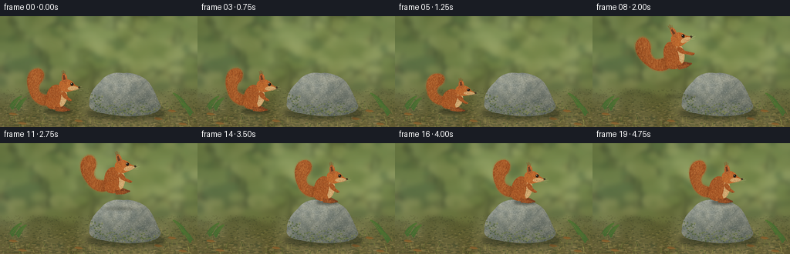
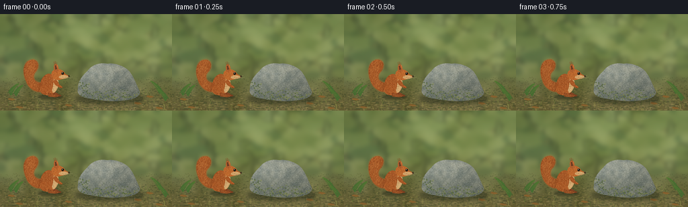

CODING AGENTS AS PIXEL WORLD MODELS
traex/GPT-6.1-Sol · dynamic_spatial_relationship_0025
点击播放 · 原生 RGB 像素
逐轮保存的候选
回放视频、检查图与代码变化。
每份候选均可单独播放。实际图片检查记录在下方工具轨迹中。
候选 01播放与检查图
点击播放 · 原生 RGB 像素


展开代码变化
--- 上一保存版本
+++ 本次保存版本
@@ -0,0 +1,253 @@
+from pathlib import Path
+import math
+import numpy as np
+from PIL import Image, ImageDraw, ImageFilter
+import artifact_io
+
+ROOT = Path(__file__).resolve().parent
+W, H, S = 256, 144, 4
+rng = np.random.default_rng(20261110)
+
+def noise(w,h,scale,seed):
+ r=np.random.default_rng(seed)
+ a=(r.random((max(2,h//scale),max(2,w//scale)))*255).astype('uint8')
+ return np.asarray(Image.fromarray(a).resize((w,h),Image.Resampling.BICUBIC),dtype=float)/255-.5
+
+def path(points, steps=18):
+ out=[]; p=None
+ for cmd in points:
+ if cmd[0]=='M': p=np.array(cmd[1:]); out.append(tuple(p))
+ elif cmd[0]=='L': p=np.array(cmd[1:]); out.append(tuple(p))
+ elif cmd[0]=='C':
+ a,b,c=np.array(cmd[1:3]),np.array(cmd[3:5]),np.array(cmd[5:7])
+ for t in np.linspace(0,1,steps)[1:]:
+ q=(1-t)**3*p+3*(1-t)**2*t*a+3*(1-t)*t*t*b+t**3*c; out.append(tuple(q))
+ p=c
+ return out
+
+def poly(d,pts,fill): d.polygon([(round(x*S),round(y*S)) for x,y in pts],fill=fill)
+def ellipse(d,box,fill): d.ellipse(tuple(round(v*S) for v in box),fill=fill)
+def line(d,points,fill,width=1): d.line([(round(x*S),round(y*S)) for x,y in points],fill=fill,width=max(1,round(width*S)))
+
+# A fixed camera, softly lit, late-summer forest floor.
+def background():
+ yy,xx=np.mgrid[0:H*S,0:W*S]; y=yy/S; x=xx/S
+ n=noise(W*S,H*S,65,12); n2=noise(W*S,H*S,180,2)
+ t=np.clip((y-60)/82,0,1)
+ colors=np.array([91,108,64])[None,None,:]*(1-t[:,:,None])+np.array([104,96,57])[None,None,:]*t[:,:,None]
+ light=np.exp(-((x-164)**2/140**2+(y-37)**2/80**2))*35
+ colors+=light[:,:,None]*np.array([1,.97,.58])+n[:,:,None]*18+n2[:,:,None]*24
+ im=Image.fromarray(np.clip(colors,0,255).astype('uint8')).convert('RGB')
+ trees=Image.new('RGBA',im.size); d=ImageDraw.Draw(trees)
+ rr=np.random.default_rng(50)
+ for i in range(29):
+ px=rr.uniform(-15,267); wide=rr.uniform(2,9); lean=rr.uniform(-15,15)
+ c=rr.choice([(65,75,43,110),(47,62,40,120),(120,117,67,110),(86,89,55,130)])
+ poly(d,[(px-wide,-15),(px+wide,-15),(px+lean+wide*.35,100),(px+lean-wide*.45,100)],tuple(c))
+ for branch in range(3):
+ by=rr.uniform(6,70); line(d,[(px,by),(px+rr.uniform(-26,26),by-rr.uniform(8,23))],tuple(c),1.1)
+ for i in range(230):
+ x=rr.uniform(-15,270); y=rr.uniform(-10,98); a=rr.uniform(3,16)
+ c=rr.choice([(143,156,80,45),(189,190,112,50),(42,73,40,65),(112,133,66,75)])
+ ellipse(d,(x-a,y-a*.6,x+a,y+a*.6),tuple(c))
+ im=Image.alpha_composite(im.convert('RGBA'),trees.filter(ImageFilter.GaussianBlur(3.3*S))).convert('RGB')
+ # Ground mottling becomes finer and sharper towards the camera.
+ layer=Image.new('RGBA',im.size); d=ImageDraw.Draw(layer)
+ for i in range(2500):
+ x=rr.uniform(0,256); y=rr.uniform(94,144); z=(y-84)/60
+ r=rr.uniform(.2,1.9)*z
+ col=rr.choice([(160,144,86,100),(69,77,42,120),(127,126,64,120),(182,161,107,75),(52,66,39,120)])
+ ellipse(d,(x-r*1.9,y-r*.45,x+r*1.9,y+r*.45),tuple(col))
+ im=Image.alpha_composite(im.convert('RGBA'),layer.filter(ImageFilter.GaussianBlur(.23*S)))
+ d=ImageDraw.Draw(im)
+ # Small grasses and scattered warm dry leaves, kept away from the action.
+ for i in range(210):
+ x=rr.uniform(0,256); y=rr.uniform(109,148)
+ if 32<x<207 and 110<y<130: continue
+ h=rr.uniform(2,8); col=tuple(rr.choice([(76,89,43,220),(112,126,58,220),(150,143,76,210)]))
+ line(d,[(x,y),(x+rr.uniform(-2,2),y-h)],col,rr.uniform(.18,.5))
+ for x,y in [(16,127),(222,123),(101,136),(236,140),(28,139),(204,133)]:
+ poly(d,[(x-5,y),(x-2,y-2),(x+4,y-1),(x+7,y+1),(x+1,y+2)],(126,91,44,255))
+ line(d,[(x-4,y),(x+6,y+.7)],(174,138,70,255),.25)
+ # A few low fern fronds on the left and at the far right.
+ for bx,by,length in [(10,119,23),(18,120,21),(244,117,26),(252,127,22)]:
+ direction=1 if bx<128 else -1
+ pts=[(bx+direction*length*t*.75,by-length*math.sin(t*1.2)*.7) for t in np.linspace(0,1,20)]
+ line(d,pts,(63,94,43,255),.55)
+ for t in np.linspace(.14,.96,11):
+ cx=bx+direction*length*t*.75; cy=by-length*math.sin(t*1.2)*.7; ll=5*(1-t)+1
+ for sign in [-1,1]:
+ poly(d,[(cx,cy),(cx+direction*ll*.6,cy-sign*ll),(cx+direction*ll,cy-sign*ll*.8),(cx+direction*1.4,cy+.3)],(67+int(t*15),105+int(t*12),48,255))
+ return im
+
+ROCK = path([('M',116,112),('C',115,101,123,91,130,85),('C',137,75,148,72,160,74),('C',169,72,184,77,191,84),('C',198,91,204,107,208,116),('C',209,123,198,128,183,129),('C',169,131,148,129,134,126),('C',123,125,113,120,116,112)])
+
+def rock(im):
+ shadow=Image.new('RGBA',im.size); d=ImageDraw.Draw(shadow)
+ ellipse(d,(112,118,215,134),(30,36,22,125))
+ im=Image.alpha_composite(im,shadow.filter(ImageFilter.GaussianBlur(3*S)))
+ m=Image.new('L',im.size); poly(ImageDraw.Draw(m),ROCK,255)
+ yy,xx=np.mgrid[0:H*S,0:W*S]; x=xx/S; y=yy/S
+ n=noise(W*S,H*S,24,43); n2=noise(W*S,H*S,5,44); grain=noise(W*S,H*S,1,45)
+ light=17*np.exp(-((x-147)/38)**2-((y-85)/19)**2)-.63*np.maximum(y-91,0)-.16*(x-150)
+ c=np.array([132,137,126])[None,None,:]+(light+n*25+n2*17+grain*11)[:,:,None]
+ c[:,:,0]+=n*5; c[:,:,2]-=n*6
+ img=Image.fromarray(np.clip(c,0,255).astype('uint8')).convert('RGBA'); img.putalpha(m)
+ im=Image.alpha_composite(im,img)
+ detail=Image.new('RGBA',im.size); d=ImageDraw.Draw(detail)
+ poly(d,[(131,85),(149,77),(170,76),(184,82),(167,88),(145,88)],(194,192,166,36))
+ poly(d,[(167,88),(184,82),(195,98),(196,116),(183,122),(171,106)],(61,71,64,26))
+ poly(d,[(125,99),(145,89),(152,101),(143,119),(123,117)],(91,102,88,29))
+ for points in [[(135,88),(145,92),(158,91),(165,96)],[(166,96),(170,109),(180,120)],[(126,104),(134,107),(132,116)],[(187,86),(180,94),(182,100)]]:
+ line(d,points,(68,77,68,100),.45)
+ line(d,[(x-.4,y-.55) for x,y in points],(199,200,178,55),.32)
+ rr=np.random.default_rng(800)
+ for i in range(1450):
+ x=rr.uniform(117,206); y=rr.uniform(74,128)
+ if m.getpixel((int(x*S),int(y*S)))==0: continue
+ r=rr.uniform(.07,.45); c=rr.choice([(217,214,186,85),(47,62,53,75),(103,115,82,80),(182,184,156,85)])
+ ellipse(d,(x-r,y-r*.7,x+r,y+r*.7),tuple(c))
+ # Moss gathers in patches along the lower edges, not on the landing surface.
+ for i in range(720):
+ x=rr.uniform(116,207); y=rr.uniform(101,129)
+ if m.getpixel((int(x*S),int(y*S)))==0: continue
+ chance=math.exp(-((y-123)/7)**2)*.6+math.exp(-((x-125)/7)**2-((y-108)/11)**2)*.6
+ if rr.random()>chance: continue
+ r=rr.uniform(.2,1.2)
+ c=rr.choice([(72,91,42,160),(104,118,55,150),(131,138,67,140),(58,78,37,140)])
+ ellipse(d,(x-r,y-r*.7,x+r,y+r*.7),tuple(c))
+ detail.putalpha(Image.fromarray((np.asarray(detail.getchannel('A'),dtype=float)*np.asarray(m)/255).astype('uint8')))
+ return Image.alpha_composite(im,detail)
+
+# Squirrel is painted locally; its fur texture moves rigidly with the anatomy.
+SW,SH=122,106
+AX,AY=69,84
+
+def localpts(points): return [(x+AX,y+AY) for x,y in points]
+
+def squirrel(tailangle=0,stretch=1,arm=0):
+ canvas=Image.new('RGBA',(SW*S,SH*S))
+ rr=np.random.default_rng(82)
+ def form(pts,col,kind='body',fur=0):
+ mask=Image.new('L',canvas.size); poly(ImageDraw.Draw(mask),localpts(pts),255)
+ yy,xx=np.mgrid[0:SH*S,0:SW*S]; x=xx/S-AX; y=yy/S-AY
+ n=noise(SW*S,SH*S,3,34); g=noise(SW*S,SH*S,1,35)
+ # Warm directional light and russet shade give rounded anatomy.
+ lighting=7*np.sin(x*.13)-y*.22+n*19+g*11
+ if kind=='tail': lighting=14*np.cos((x+30)*.14)+n*25+g*15
+ rgba=np.zeros((SH*S,SW*S,4),dtype='uint8')
+ rgba[:,:,:3]=np.clip(np.array(col)[None,None,:]+lighting[:,:,None]*np.array([1,.75,.43]),0,255)
+ rgba[:,:,3]=np.asarray(mask)
+ canvas.alpha_composite(Image.fromarray(rgba))
+ if fur:
+ tex=Image.new('RGBA',canvas.size); d=ImageDraw.Draw(tex)
+ for j in range(fur):
+ x=rr.uniform(min(p[0] for p in pts),max(p[0] for p in pts)); y=rr.uniform(min(p[1] for p in pts),max(p[1] for p in pts))
+ if mask.getpixel((int((x+AX)*S),int((y+AY)*S)))<1: continue
+ if kind=='tail':
+ dx=.8*math.sin((y+40)/19)+.5; dy=-rr.uniform(.9,2.5)
+ else: dx=rr.uniform(-.5,.6); dy=rr.uniform(.7,1.8)
+ color=rr.choice([(217,150,79,100),(98,48,23,100),(180,100,40,110),(235,172,101,95)])
+ line(d,localpts([(x,y),(x+dx,y+dy)]),tuple(color),.18)
+ tex.putalpha(Image.fromarray((np.asarray(tex.getchannel('A'),dtype=float)*np.asarray(mask)/255).astype('uint8')))
+ canvas.alpha_composite(tex)
+ return mask
+ def bez(commands): return path(commands)
+ def tail_transform(pts):
+ a=math.radians(tailangle); bx,by=-11,-10
+ return [(bx+math.cos(a)*(x-bx)-math.sin(a)*(y-by),by+math.sin(a)*(x-bx)+math.cos(a)*(y-by)) for x,y in pts]
+ tail=bez([('M',-10,-7),('C',-21,-3,-33,-10,-37,-21),('C',-45,-38,-40,-53,-29,-54),('C',-19,-55,-17,-45,-22,-37),('C',-29,-30,-27,-22,-18,-20),('C',-12,-18,-9,-15,-10,-7)])
+ tail=tail_transform(tail)
+ # Wispy silhouette: many tapered, short hairs rather than a smooth tube.
+ d=ImageDraw.Draw(canvas)
+ for i in range(len(tail)):
+ x,y=tail[i]; prev=np.array(tail[(i-1)%len(tail)]); nex=np.array(tail[(i+1)%len(tail)])
+ v=nex-prev; norm=np.array([v[1],-v[0]])/(np.linalg.norm(v)+.001)
+ for u in [0,.35,.7]:
+ q=np.array([x,y])*(1-u)+nex*u; length=rr.uniform(.8,2.1)
+ line(d,localpts([tuple(q),tuple(q+norm*length)]),(174,103,49,185),.27)
+ form(tail,(151,77,33),'tail',2300)
+ # Far rear foot and far ear.
+ form(bez([('M',-3,-5),('C',2,-8,8,-5,12,-2),('C',16,-1,16,1,10,1),('L',0,0)]),(113,57,29),fur=80)
+ form(bez([('M',5,-36),('C',3,-44,5,-49,7,-46),('L',11,-37)]),(123,62,30),fur=80)
+ # Pear-shaped haunch and shoulder.
+ form(bez([('M',-9,-3),('C',-18,-8,-18,-22,-11,-29),('C',-7,-34,0,-35,5,-29),('C',11,-21,12,-13,6,-6),('C',2,-2,-4,0,-9,-3)]),(160,81,35),fur=1600)
+ form(bez([('M',4,-28),('C',11,-26,12,-21,10,-13),('C',7,-5,3,-3,0,-6),('C',3,-12,4,-20,4,-28)]),(207,173,120),fur=450)
+ form(bez([('M',-10,-16),('C',-19,-15,-18,-4,-11,-2),('C',-6,0,1,-1,2,-5),('C',1,-12,-3,-17,-10,-16)]),(168,87,38),fur=430)
+ form(bez([('M',-5,-4),('C',0,-5,5,-2,9,-1),('C',12,0,11,2,5,2),('L',-4,1)]),(142,73,34),fur=100)
+ # Head, cheek and short pointed muzzle.
+ form(bez([('M',1,-28),('C',-1,-35,2,-40,10,-40),('C',16,-40,19,-36,21,-33),('L',26,-30),('C',28,-28,24,-26,20,-26),('C',14,-24,8,-22,3,-26)]),(176,93,39),fur=750)
+ form(bez([('M',13,-30),('C',17,-32,22,-31,26,-29),('C',25,-26,19,-25,14,-26),('C',11,-27,11,-28,13,-30)]),(205,167,113),fur=180)
+ # Tall tufted near ear.
+ ear=bez([('M',5,-36),('C',3,-42,4,-48,7,-48),('C',11,-47,12,-40,10,-36)])
+ form(ear,(169,88,41),fur=200)
+ d=ImageDraw.Draw(canvas)
+ poly(d,localpts([(6,-39),(5.5,-45),(7.2,-46),(9,-40)]),(108,60,35,255))
+ for x,y,dx,dy in [(5,-46,-1,-5),(6,-47,0,-5),(7,-47,.3,-4),(8,-46,.9,-4)]:
+ line(d,localpts([(x,y),(x+dx,y+dy)]),(133,70,33,235),.4)
+ # Forearm and small curled fingers.
+ form(bez([('M',5,-24),('C',8,-25,11,-20,12,-17),('L',16+arm,-14+arm*.5),('C',18+arm,-13+arm*.5,16+arm,-11+arm*.5,13+arm,-12+arm*.5),('L',8,-15),('C',4,-18,2,-21,5,-24)]),(155,77,32),fur=240)
+ d=ImageDraw.Draw(canvas)
+ for k in range(3): line(d,localpts([(13+arm+k*.8,-12.5+arm*.5),(14+arm+k*.8,-11.9+arm*.5)]),(72,46,26,245),.27)
+ # Glossy dark eyes, tiny nostril, mouth and restrained whiskers.
+ ellipse(d,(AX+15.1,AY-35.8,AX+19.2,AY-31.3),(113,67,34,255))
+ ellipse(d,(AX+15.8,AY-35.5,AX+19,AY-32),(22,20,14,255))
+ ellipse(d,(AX+16.15,AY-35.1,AX+17.1,AY-34.1),(245,234,199,255))
+ ellipse(d,(AX+17.8,AY-33.1,AX+18.3,AY-32.6),(123,111,80,255))
+ ellipse(d,(AX+25.2,AY-30.5,AX+28,AY-28.6),(42,29,19,255))
+ line(d,localpts([(25.8,-27.6),(22,-26.8),(20,-27.1)]),(94,65,40,220),.35)
+ for pts in [[(23,-28),(30,-31)],[(23,-27.5),(32,-28.2)],[(22.5,-27),(30,-25.5)]]:
+ line(d,localpts(pts),(222,203,157,145),.18)
+ for k in range(3):
+ line(d,localpts([(5+k*1.4,.7),(7+k*1.4,1.8)]),(77,48,28,240),.27)
+ if stretch!=1:
+ # Scale about ground-contact anchor, not about the center of the image.
+ canvas=canvas.transform(canvas.size,Image.Transform.AFFINE,(1,0,0,0,1/stretch,AY*S*(1-1/stretch)),Image.Resampling.BICUBIC)
+ return canvas
+
+
+def render():
+ base=rock(background())
+ frames=[]
+ for i in range(20):
+ # Anticipation, a visibly airborne ballistic arc, then a stable landing.
+ if i<5:
+ x,y=76,122; angle=0; stretch=1-.014*math.sin(i*.9); tailangle=math.sin(i*.65)*3; arm=0
+ elif i==5:
+ x,y=76,122; angle=-4; stretch=.82; tailangle=7; arm=1
+ elif i<=12:
+ u=(i-5)/7
+ x=76+91*u
+ y=122-46*u-36*4*u*(1-u)
+ angle=22*math.sin(math.pi*u)
+ stretch=1+.12*math.sin(math.pi*u)
+ tailangle=-13*math.sin(math.pi*u)
+ arm=6*math.sin(math.pi*u)
+ elif i==13:
+ x,y=167,76; angle=-3; stretch=.85; tailangle=5; arm=2
+ else:
+ x,y=167,76; angle=0; stretch=1-.007*math.sin((i-14)*1.3); tailangle=2*math.sin((i-14)*.8); arm=0
+ im=base.copy()
+ # A grounded shadow that fades and spreads while the squirrel is airborne.
+ sh=Image.new('RGBA',im.size); d=ImageDraw.Draw(sh)
+ if i<=5:
+ ellipse(d,(x-19,120,x+18,127),(25,31,20,108))
+ elif i<12:
+ u=(i-5)/7; sy=122*(1-u)+77*u; dist=sy-y
+ r=17+dist*.12
+ ellipse(d,(x-r,sy-1,x+r,sy+4),(27,32,22,int(78-dist*.8)))
+ else:
+ ellipse(d,(x-13,74,x+14,80),(31,35,26,113))
+ im=Image.alpha_composite(im,sh.filter(ImageFilter.GaussianBlur(1.3*S)))
+ spr=squirrel(tailangle,stretch,arm)
+ if angle:
+ spr=spr.rotate(angle,resample=Image.Resampling.BICUBIC,center=(AX*S,AY*S))
+ im.alpha_composite(spr,(round((x-AX)*S),round((y-AY)*S)))
+ rgb=im.convert('RGB').resize((W,H),Image.Resampling.LANCZOS)
+ frames.append(np.asarray(rgb,dtype=np.uint8))
+ return np.stack(frames)
+
+if __name__=='__main__':
+ frames=render()
+ artifact_io.save(frames, ROOT)
+ print('Saved', frames.shape, frames.dtype, 'to', ROOT)
可观测工具轨迹
实际执行的命令与返回图片。
命令 1exit 0
/bin/bash -lc 'ls -la && cat prompt.txt && cat GENERATION_RULES.md && cat task_spec.json'
命令 2exit 0
/bin/bash -lc "cat artifact_io.py && python - <<'PY'
import PIL,numpy
print('PIL',PIL.__version__)
PY"命令 3exit 0
/bin/bash -lc "cat > generate.py <<'PY'
from pathlib import Path
import math
import numpy as np
from PIL import Image, ImageDraw, ImageFilter
import artifact_io
ROOT = Path(__file__).resolve().parent
W, H, S = 256, 144, 4
rng = np.random.default_rng(20261110)
def noise(w,h,scale,seed):
r=np.random.default_rng(seed)
a=(r.random((max(2,h//scale),max(2,w//scale)))*255).astype('uint8')
return np.asarray(Image.fromarray(a).resize((w,h),Image.Resampling.BICUBIC),dtype=float)/255-.5
def path(points, steps=18):
out=[]; p=None
for cmd in points:
if cmd[0]=='M': p=np.array(cmd[1:]); out.append(tuple(p))
elif cmd[0]=='L': p=np.array(cmd[1:]); out.append(tuple(p))
elif cmd[0]=='C':
a,b,c=np.array(cmd[1:3]),np.array(cmd[3:5]),np.array(cmd[5:7])
for t in np.linspace(0,1,steps)[1:]:
q=(1-t)**3*p+3*(1-t)**2*t*a+3*(1-t)*t*t*b+t**3*c; out.append(tuple(q))
p=c
return out
def poly(d,pts,fill): d.polygon([(round(x*S),round(y*S)) for x,y in pts],fill=fill)
def ellipse(d,box,fill): d.ellipse(tuple(round(v*S) for v in box),fill=fill)
def line(d,points,fill,width=1): d.line([(round(x*S),round(y*S)) for x,y in points],fill=fill,width=max(1,round(width*S)))
# A fixed camera, softly lit, late-summer forest floor.
def background():
yy,xx=np.mgrid[0:H*S,0:W*S]; y=yy/S; x=xx/S
n=noise(W*S,H*S,65,12); n2=noise(W*S,H*S,180,2)
t=np.clip((y-60)/82,0,1)
colors=np.array([91,108,64])[None,None,:]*(1-t[:,:,None])+np.array([104,96,57])[None,None,:]*t[:,:,None]
light=np.exp(-((x-164)**2/140**2+(y-37)**2/80**2))*35
colors+=light[:,:,None]*np.array([1,.97,.58])+n[:,:,None]*18+n2[:,:,None]*24
im=Image.fromarray(np.clip(colors,0,255).astype('uint8')).convert('RGB')
trees=Image.new('RGBA',im.size); d=ImageDraw.Draw(trees)
rr=np.random.default_rng(50)
for i in range(29):
px=rr.uniform(-15,267); wide=rr.uniform(2,9); lean=rr.uniform(-15,15)
c=rr.choice([(65,75,43,110),(47,62,40,120),(120,117,67,110),(86,89,55,130)])
poly(d,[(px-wide,-15),(px+wide,-15),(px+lean+wide*.35,100),(px+lean-wide*.45,100)],tuple(c))
for branch in range(3):
by=rr.uniform(6,70); line(d,[(px,by),(px+rr.uniform(-26,26),by-rr.uniform(8,23))],tuple(c),1.1)
for i in range(230):
x=rr.uniform(-15,270); y=rr.uniform(-10,98); a=rr.uniform(3,16)
c=rr.choice([(143,156,80,45),(189,190,112,50),(42,73,40,65),(112,133,66,75)])
ellipse(d,(x-a,y-a*.6,x+a,y+a*.6),tuple(c))
im=Image.alpha_composite(im.convert('RGBA'),trees.filter(ImageFilter.GaussianBlur(3.3*S))).convert('RGB')
# Ground mottling becomes finer and sharper towards the camera.
layer=Image.new('RGBA',im.size); d=ImageDraw.Draw(layer)
for i in range(2500):
x=rr.uniform(0,256); y=rr.uniform(94,144); z=(y-84)/60
r=rr.uniform(.2,1.9)*z
col=rr.choice([(160,144,86,100),(69,77,42,120),(127,126,64,120),(182,161,107,75),(52,66,39,120)])
ellipse(d,(x-r*1.9,y-r*.45,x+r*1.9,y+r*.45),tuple(col))
im=Image.alpha_composite(im.convert('RGBA'),layer.filter(ImageFilter.GaussianBlur(.23*S)))
d=ImageDraw.Draw(im)
# Small grasses and scattered warm dry leaves, kept away from the action.
for i in range(210):
x=rr.uniform(0,256); y=rr.uniform(109,148)
if 32<x<207 and 110<y<130: continue
h=rr.uniform(2,8); col=tuple(rr.choice([(76,89,43,220),(112,126,58,220),(150,143,76,210)]))
line(d,[(x,y),(x+rr.uniform(-2,2),y-h)],col,rr.uniform(.18,.5))
for x,y in [(16,127),(222,123),(101,136),(236,140),(28,139),(204,133)]:
poly(d,[(x-5,y),(x-2,y-2),(x+4,y-1),(x+7,y+1),(x+1,y+2)],(126,91,44,255))
line(d,[(x-4,y),(x+6,y+.7)],(174,138,70,255),.25)
# A few low fern fronds on the left and at the far right.
for bx,by,length in [(10,119,23),(18,120,21),(244,117,26),(252,127,22)]:
direction=1 if bx<128 else -1
pts=[(bx+direction*length*t*.75,by-length*math.sin(t*1.2)*.7) for t in np.linspace(0,1,20)]
line(d,pts,(63,94,43,255),.55)
for t in np.linspace(.14,.96,11):
cx=bx+direction*length*t*.75; cy=by-length*math.sin(t*1.2)*.7; ll=5*(1-t)+1
for sign in [-1,1]:
poly(d,[(cx,cy),(cx+direction*ll*.6,cy-sign*ll),(cx+direction*ll,cy-sign*ll*.8),(cx+direction*1.4,cy+.3)],(67+int(t*15),105+int(t*12),48,255))
return im
ROCK = path([('M',116,112),('C',115,101,123,91,130,85),('C',137,75,148,72,160,74),('C',169,72,184,77,191,84),('C',198,91,204,107,208,116),('C',209,123,198,128,183,129),('C',169,131,148,129,134,126),('C',123,125,113,120,116,112)])
def rock(im):
shadow=Image.new('RGBA',im.size); d=ImageDraw.Draw(shadow)
ellipse(d,(112,118,215,134),(30,36,22,125))
im=Image.alpha_composite(im,shadow.filter(ImageFilter.GaussianBlur(3*S)))
m=Image.new('L',im.size); poly(ImageDraw.Draw(m),ROCK,255)
yy,xx=np.mgrid[0:H*S,0:W*S]; x=xx/S; y=yy/S
n=noise(W*S,H*S,24,43); n2=noise(W*S,H*S,5,44); grain=noise(W*S,H*S,1,45)
light=17*np.exp(-((x-147)/38)**2-((y-85)/19)**2)-.63*np.maximum(y-91,0)-.16*(x-150)
c=np.array([132,137,126])[None,None,:]+(light+n*25+n2*17+grain*11)[:,:,None]
c[:,:,0]+=n*5; c[:,:,2]-=n*6
img=Image.fromarray(np.clip(c,0,255).astype('uint8')).convert('RGBA'); img.putalpha(m)
im=Image.alpha_composite(im,img)
detail=Image.new('RGBA',im.size); d=ImageDraw.Draw(detail)
poly(d,[(131,85),(149,77),(170,76),(184,82),(167,88),(145,88)],(194,192,166,36))
poly(d,[(167,88),(184,82),(195,98),(196,116),(183,122),(171,106)],(61,71,64,26))
poly(d,[(125,99),(145,89),(152,101),(143,119),(123,117)],(91,102,88,29))
for points in [[(135,88),(145,92),(158,91),(165,96)],[(166,96),(170,109),(180,120)],[(126,104),(134,107),(132,116)],[(187,86),(180,94),(182,100)]]:
line(d,points,(68,77,68,100),.45)
line(d,[(x-.4,y-.55) for x,y in points],(199,200,178,55),.32)
rr=np.random.default_rng(800)
for i in range(1450):
x=rr.uniform(117,206); y=rr.uniform(74,128)
if m.getpixel((int(x*S),int(y*S)))==0: continue
r=rr.uniform(.07,.45); c=rr.choice([(217,214,186,85),(47,62,53,75),(103,115,82,80),(182,184,156,85)])
ellipse(d,(x-r,y-r*.7,x+r,y+r*.7),tuple(c))
# Moss gathers in patches along the lower edges, not on the landing surface.
for i in range(720):
x=rr.uniform(116,207); y=rr.uniform(101,129)
if m.getpixel((int(x*S),int(y*S)))==0: continue
chance=math.exp(-((y-123)/7)**2)*.6+math.exp(-((x-125)/7)**2-((y-108)/11)**2)*.6
if rr.random()>chance: continue
r=rr.uniform(.2,1.2)
c=rr.choice([(72,91,42,160),(104,118,55,150),(131,138,67,140),(58,78,37,140)])
ellipse(d,(x-r,y-r*.7,x+r,y+r*.7),tuple(c))
detail.putalpha(Image.fromarray((np.asarray(detail.getchannel('A'),dtype=float)*np.asarray(m)/255).astype('uint8')))
return Image.alpha_composite(im,detail)
# Squirrel is painted locally; its fur texture moves rigidly with the anatomy.
SW,SH=122,106
AX,AY=69,84
def localpts(points): return [(x+AX,y+AY) for x,y in points]
def squirrel(tailangle=0,stretch=1,arm=0):
canvas=Image.new('RGBA',(SW*S,SH*S))
rr=np.random.default_rng(82)
def form(pts,col,kind='body',fur=0):
mask=Image.new('L',canvas.size); poly(ImageDraw.Draw(mask),localpts(pts),255)
yy,xx=np.mgrid[0:SH*S,0:SW*S]; x=xx/S-AX; y=yy/S-AY
n=noise(SW*S,SH*S,3,34); g=noise(SW*S,SH*S,1,35)
# Warm directional light and russet shade give rounded anatomy.
lighting=7*np.sin(x*.13)-y*.22+n*19+g*11
if kind=='tail': lighting=14*np.cos((x+30)*.14)+n*25+g*15
rgba=np.zeros((SH*S,SW*S,4),dtype='uint8')
rgba[:,:,:3]=np.clip(np.array(col)[None,None,:]+lighting[:,:,None]*np.array([1,.75,.43]),0,255)
rgba[:,:,3]=np.asarray(mask)
canvas.alpha_composite(Image.fromarray(rgba))
if fur:
tex=Image.new('RGBA',canvas.size); d=ImageDraw.Draw(tex)
for j in range(fur):
x=rr.uniform(min(p[0] for p in pts),max(p[0] for p in pts)); y=rr.uniform(min(p[1] for p in pts),max(p[1] for p in pts))
if mask.getpixel((int((x+AX)*S),int((y+AY)*S)))<1: continue
if kind=='tail':
dx=.8*math.sin((y+40)/19)+.5; dy=-rr.uniform(.9,2.5)
else: dx=rr.uniform(-.5,.6); dy=rr.uniform(.7,1.8)
color=rr.choice([(217,150,79,100),(98,48,23,100),(180,100,40,110),(235,172,101,95)])
line(d,localpts([(x,y),(x+dx,y+dy)]),tuple(color),.18)
tex.putalpha(Image.fromarray((np.asarray(tex.getchannel('A'),dtype=float)*np.asarray(mask)/255).astype('uint8')))
canvas.alpha_composite(tex)
return mask
def bez(commands): return path(commands)
def tail_transform(pts):
a=math.radians(tailangle); bx,by=-11,-10
return [(bx+math.cos(a)*(x-bx)-math.sin(a)*(y-by),by+math.sin(a)*(x-bx)+math.cos(a)*(y-by)) for x,y in pts]
tail=bez([('M',-10,-7),('C',-21,-3,-33,-10,-37,-21),('C',-45,-38,-40,-53,-29,-54),('C',-19,-55,-17,-45,-22,-37),('C',-29,-30,-27,-22,-18,-20),('C',-12,-18,-9,-15,-10,-7)])
tail=tail_transform(tail)
# Wispy silhouette: many tapered, short hairs rather than a smooth tube.
d=ImageDraw.Draw(canvas)
for i in range(len(tail)):
x,y=tail[i]; prev=np.array(tail[(i-1)%len(tail)]); nex=np.array(tail[(i+1)%len(tail)])
v=nex-prev; norm=np.array([v[1],-v[0]])/(np.linalg.norm(v)+.001)
for u in [0,.35,.7]:
q=np.array([x,y])*(1-u)+nex*u; length=rr.uniform(.8,2.1)
line(d,localpts([tuple(q),tuple(q+norm*length)]),(174,103,49,185),.27)
form(tail,(151,77,33),'tail',2300)
# Far rear foot and far ear.
form(bez([('M',-3,-5),('C',2,-8,8,-5,12,-2),('C',16,-1,16,1,10,1),('L',0,0)]),(113,57,29),fur=80)
form(bez([('M',5,-36),('C',3,-44,5,-49,7,-46),('L',11,-37)]),(123,62,30),fur=80)
# Pear-shaped haunch and shoulder.
form(bez([('M',-9,-3),('C',-18,-8,-18,-22,-11,-29),('C',-7,-34,0,-35,5,-29),('C',11,-21,12,-13,6,-6),('C',2,-2,-4,0,-9,-3)]),(160,81,35),fur=1600)
form(bez([('M',4,-28),('C',11,-26,12,-21,10,-13),('C',7,-5,3,-3,0,-6),('C',3,-12,4,-20,4,-28)]),(207,173,120),fur=450)
form(bez([('M',-10,-16),('C',-19,-15,-18,-4,-11,-2),('C',-6,0,1,-1,2,-5),('C',1,-12,-3,-17,-10,-16)]),(168,87,38),fur=430)
form(bez([('M',-5,-4),('C',0,-5,5,-2,9,-1),('C',12,0,11,2,5,2),('L',-4,1)]),(142,73,34),fur=100)
# Head, cheek and short pointed muzzle.
form(bez([('M',1,-28),('C',-1,-35,2,-40,10,-40),('C',16,-40,19,-36,21,-33),('L',26,-30),('C',28,-28,24,-26,20,-26),('C',14,-24,8,-22,3,-26)]),(176,93,39),fur=750)
form(bez([('M',13,-30),('C',17,-32,22,-31,26,-29),('C',25,-26,19,-25,14,-26),('C',11,-27,11,-28,13,-30)]),(205,167,113),fur=180)
# Tall tufted near ear.
ear=bez([('M',5,-36),('C',3,-42,4,-48,7,-48),('C',11,-47,12,-40,10,-36)])
form(ear,(169,88,41),fur=200)
d=ImageDraw.Draw(canvas)
poly(d,localpts([(6,-39),(5.5,-45),(7.2,-46),(9,-40)]),(108,60,35,255))
for x,y,dx,dy in [(5,-46,-1,-5),(6,-47,0,-5),(7,-47,.3,-4),(8,-46,.9,-4)]:
line(d,localpts([(x,y),(x+dx,y+dy)]),(133,70,33,235),.4)
# Forearm and small curled fingers.
form(bez([('M',5,-24),('C',8,-25,11,-20,12,-17),('L',16+arm,-14+arm*.5),('C',18+arm,-13+arm*.5,16+arm,-11+arm*.5,13+arm,-12+arm*.5),('L',8,-15),('C',4,-18,2,-21,5,-24)]),(155,77,32),fur=240)
d=ImageDraw.Draw(canvas)
for k in range(3): line(d,localpts([(13+arm+k*.8,-12.5+arm*.5),(14+arm+k*.8,-11.9+arm*.5)]),(72,46,26,245),.27)
# Glossy dark eyes, tiny nostril, mouth and restrained whiskers.
ellipse(d,(AX+15.1,AY-35.8,AX+19.2,AY-31.3),(113,67,34,255))
ellipse(d,(AX+15.8,AY-35.5,AX+19,AY-32),(22,20,14,255))
ellipse(d,(AX+16.15,AY-35.1,AX+17.1,AY-34.1),(245,234,199,255))
ellipse(d,(AX+17.8,AY-33.1,AX+18.3,AY-32.6),(123,111,80,255))
ellipse(d,(AX+25.2,AY-30.5,AX+28,AY-28.6),(42,29,19,255))
line(d,localpts([(25.8,-27.6),(22,-26.8),(20,-27.1)]),(94,65,40,220),.35)
for pts in [[(23,-28),(30,-31)],[(23,-27.5),(32,-28.2)],[(22.5,-27),(30,-25.5)]]:
line(d,localpts(pts),(222,203,157,145),.18)
for k in range(3):
line(d,localpts([(5+k*1.4,.7),(7+k*1.4,1.8)]),(77,48,28,240),.27)
if stretch"'!=1:
# Scale about ground-contact anchor, not about the center of the image.
canvas=canvas.transform(canvas.size,Image.Transform.AFFINE,(1,0,0,0,1/stretch,AY*S*(1-1/stretch)),Image.Resampling.BICUBIC)
return canvas
def render():
base=rock(background())
frames=[]
for i in range(20):
# Anticipation, a visibly airborne ballistic arc, then a stable landing.
if i<5:
x,y=76,122; angle=0; stretch=1-.014*math.sin(i*.9); tailangle=math.sin(i*.65)*3; arm=0
elif i==5:
x,y=76,122; angle=-4; stretch=.82; tailangle=7; arm=1
elif i<=12:
u=(i-5)/7
x=76+91*u
y=122-46*u-36*4*u*(1-u)
angle=22*math.sin(math.pi*u)
stretch=1+.12*math.sin(math.pi*u)
tailangle=-13*math.sin(math.pi*u)
arm=6*math.sin(math.pi*u)
elif i==13:
x,y=167,76; angle=-3; stretch=.85; tailangle=5; arm=2
else:
x,y=167,76; angle=0; stretch=1-.007*math.sin((i-14)*1.3); tailangle=2*math.sin((i-14)*.8); arm=0
im=base.copy()
# A grounded shadow that fades and spreads while the squirrel is airborne.
sh=Image.new('"'RGBA',im.size); d=ImageDraw.Draw(sh)
if i<=5:
ellipse(d,(x-19,120,x+18,127),(25,31,20,108))
elif i<12:
u=(i-5)/7; sy=122*(1-u)+77*u; dist=sy-y
r=17+dist*.12
ellipse(d,(x-r,sy-1,x+r,sy+4),(27,32,22,int(78-dist*.8)))
else:
ellipse(d,(x-13,74,x+14,80),(31,35,26,113))
im=Image.alpha_composite(im,sh.filter(ImageFilter.GaussianBlur(1.3*S)))
spr=squirrel(tailangle,stretch,arm)
if angle:
spr=spr.rotate(angle,resample=Image.Resampling.BICUBIC,center=(AX*S,AY*S))
im.alpha_composite(spr,(round((x-AX)*S),round((y-AY)*S)))
rgb=im.convert('RGB').resize((W,H),Image.Resampling.LANCZOS)
frames.append(np.asarray(rgb,dtype=np.uint8))
return np.stack(frames)
if __name__=='__main__':
frames=render()
artifact_io.save(frames, ROOT)
print('Saved', frames.shape, frames.dtype, 'to', ROOT)
PY
python generate.py"命令 4exit 0
/bin/bash -lc "python - <<'PY'
from pathlib import Path
import numpy as np
from PIL import Image
p=Path('.')
a=np.load(p/'pixels.npz')['pixels']
assert a.shape==(144,256,20)
assert len(list((p/'frames').glob('*.png')))==20
assert all(Image.open(f).mode=='RGB' and Image.open(f).size==(256,144) for f in (p/'frames').glob('*.png'))
assert (p/'index.html').is_file()
print('Validated 20 RGB frames, 256Ã144, 4 fps; required artifacts present.')
PY
command -v ffmpeg || true"保存候选 1 份；完成命令 4 次；可验证图片返回 0 张。原始 API 响应与完整日志保留在本地。